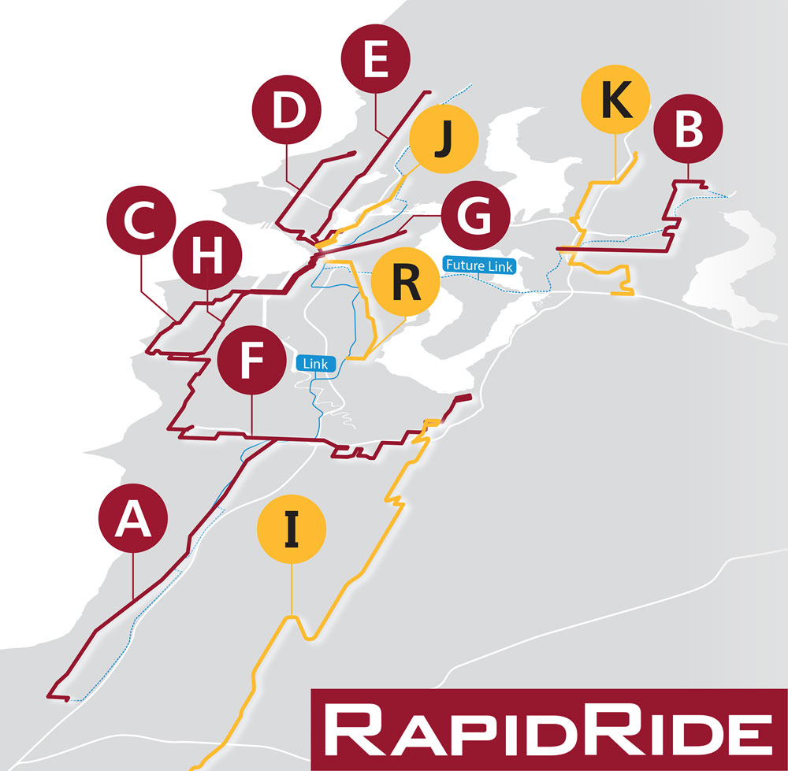

King County RapidRide Network
Launched as part of King County Metro's "Transit Now" bond intiative in 2006, the RapidRide program is a network of limited-stop routes with varying levels of bus rapid transit features. All of the routes replace pre-existing routes with far fewer stops, bus priority lanes, and traffic signal preemption, combining for an average speed increase of 40% over the lines they replaced. The lines run at high frequency, no less than 10 minutes during commuting hours and every 15 minutes on weekends and off-peak hours. This project will be an overview of the Rapid Ride's existing lines and planned projects.